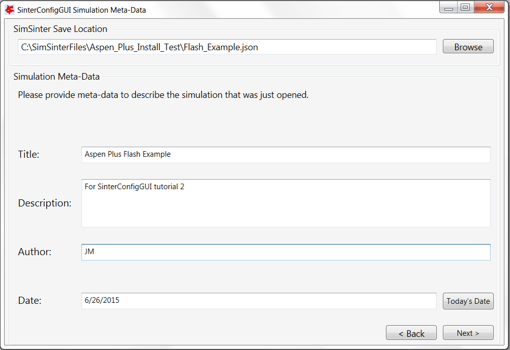
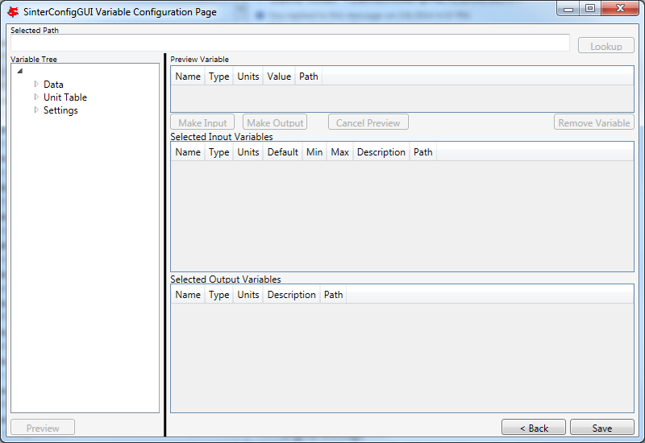
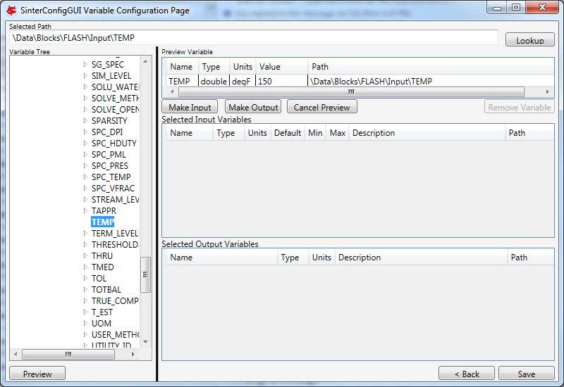
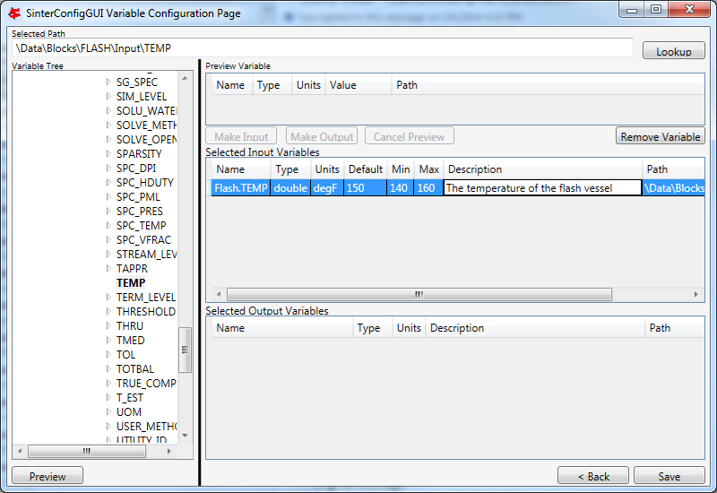
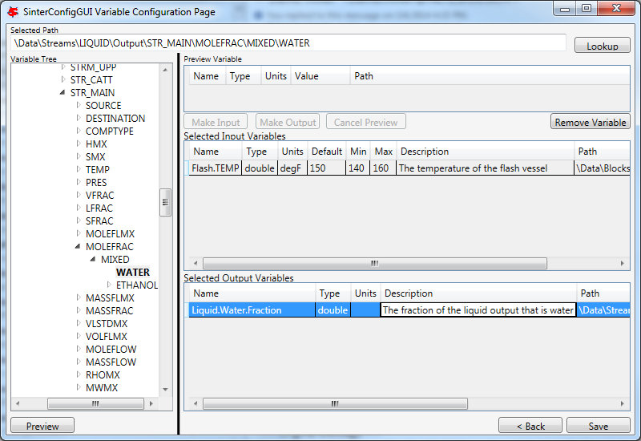

Aspen Plus Configuration¶
The initial steps for opening a simulation and entering metadata for an Aspen Plus simulation are similar to ACM. Refer to the SimSinter ACM tutorial [sec.tut.simsinter.acm]. In this tutorial, a flash model “Flash_Example.bkp” installed in the “C:SimSinterFilesAspen_Plus_Install_Test” is used as an example. Open the Aspen Plus file and enter the metadata as shown in Figure [fig.sinter.ap.metadata].
SinterConfigGUI Simulation Meta-Data with Data Completed
The SinterConfigGUI Variable Configuration Page displays as illustrated in Figure [fig.sinter.ap.variableempty]. Aspen Plus has no settings, so there are no setting variables in the input section. Unlike ACM, AspenPlus displays the Variable Tree on the left side, so the user can explore the tree as is done in Aspen Plus Tools \(\rightarrow\) Variable Explorer. Unfortunately, searching is not possible.
SinterConfigGUI Variable Configuration Page Empty Variables
Variable Tree nodes can be expanded for searching (Figure [fig.sinter.ap.expandtree]).

SinterConfigGUI Variable Configuration Page Expanded Aspen Plus Variable Tree
The user can type the node address directly into the Selected Path field (this is useful for copy/paste from Aspen Plus’ Variable Explorer) (Figure [fig.sinter.ap.selectvar]). Click Lookup or Preview (which automatically causes the tree to expand and selects selected variables in the Variable Tree).
SinterConfigGUI Variable Configuration Page Aspen Plus Variable Selected
To make the temperature of the Flash chamber an Input Variable, click Make Input. Additionally, the user can Name the variable, fix the Description, and enter the Min/Max fields by clicking on the appropriate text and entering it.
SinterConfigGUI Variable Configuration Page Input Variable
Select an Output Variable, Preview it, and click Make Output. Next, update the fields as with the Input Variable to give a better Name and Description.
SinterConfigGUI Variable Configuration Page Output Variable
The task is complete. Save it by clicking Save or CTRL+S. The file is saved to the location specified in the SinterConfigGUI Simulation Meta-Data page. If the user wishes to save a copy under a different name, navigate back to the SinterConfigGUI Simulation Meta-Data page and change the name.